本页是唯一权威主文档（blog 发布版；本地只读副本在仓库 docs/report/index.html）。全部结果使用 v5 极简标准与统一口径：gap = fixed-val − current-batch online train loss，run 级溯源见 实验登记表。
代码：训练与注入 code/train.py（n-gram 注入公式 x = wte(idx) + Σ_n ngram_ve[idx_n]，clean 单表 nn.Embedding(R, n_embd)，单一 hash，R = distinct+1 零碰撞）；频率索引 code/ngram_freq.py；launcher code/cluster/run_v5_clean.sh（128× 标准已写死）；批量清单 code/cluster/run_v5_main_manifest.sh。训练原理：每个位置的 n-gram context 经单一 hash 查到表行、把行向量加到注入点残差流；反向传播只更新被命中的行（稀疏更新），这就是表记忆写入的物理过程。口径细节：online train loss 在参数更新前记录，fixed-val 在同 step 更新后；novel（hit=0）无 train loss、不定义 gap；历史 2× 时代数据与 4-layer/2-hash 框架均已退役，仅存档。
每一张图的 run_id / step / seed 都登记在 experiment-registry.html；数值断言台账在 docs/claims-ledger.md。旧版主文档（2× 时代，2026-08-06）已快照至 versions/。
同一条训练流、同一套评测下，四个注入臂只有带 n-gram 注入的臂产生持续增长的 val−train gap：input / y / v 三臂 gap 随 step 单调增长，nogram 对照贴零。这条现象在 2× 与 128× 两代表 LR 下都成立；128× 下终点 gap 为 5.67（input）/ 5.25（y）/ 7.65（v）/ 0.23（nogram）；种子 43/44 在 2× 时代复现为 5.42 / 5.53，结论稳健。
nglab1x_{input,y,v,nogram}_v5_128x_freq10_fixed（128×）与 nglab1x_{input,y,v,nogram}_v5_fixed（2× 历史），seed 42，val/freq=10。脚本 plot_v5_fig01_injection_interactive.py。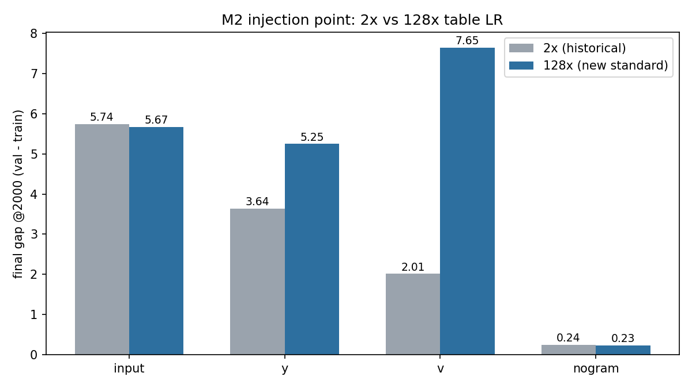
把每个 eval step 的 train/val loss 按 context 的 exact train hit-count f 分桶：per-bin gap 随 f 幂律衰减——低频 context 贡献了大部分 gap。两条独立的测量互相印证：主 run 的 online coarse bins（step-1000 局部斜率 bigram ≈ −0.21 / trigram ≈ −0.44）与固定 train 探针的 exact-f 拟合（bigram −0.253 / trigram −0.318，窗口 [4,4096]；7 个几何桶 token-mass 加权池化 + 桶点等权 log–log 回归，协议见图 4 图注）。两个口径都不是 1/f；β 不是普适常数（随 R 与口径漂移，见 §8），只作现象描述使用。每个频率段实际承载多少 token，与分桶 gap 同图呈现（图 3）：train 一个 epoch 共 49.7M token（337 batches × 147,456），fixed val 每支路评测 589,824 token（约 train 的 1/84）。
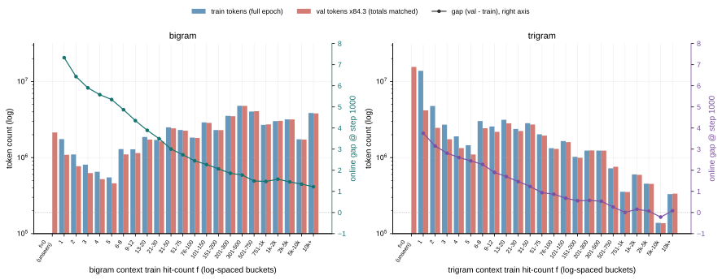
nglab1x_input_v5_128x_freq10_fixed + data/freq_index.npz；脚本 plot_v5_fig03_frequency_tokens.py。s1_frequency_exact_points.csv + s1_scaling_fits.csv；脚本 plot_v5_fig04_frequency_exact.py。频率轴与干预直接相连：把 f≤8 的 n-gram 贡献在 epoch 边界后动态屏蔽，net gap 掉到 0.765（对照 2.724）——少量低频 context 承载了 ~72% 的 gap；mask_low / mask_high 两组阈值扫描见 §6 图 11–13。
单表变 R（扫描的表是唯一开启的 n-gram 表，另一支路整表关闭），gap 在 R∈[2¹⁶, 2²²] 窗口内呈干净幂律：bigram γ ≈ 0.576、trigram γ ≈ 0.665。在 §8 的数学模型里，R 主要改变同一个频率核能被读出的总幅度；我们把它记为经验修正 ρ(R)，不再把某个尚未验证的碰撞公式塞进主方程。窗口外（R≲2¹⁴ 或 ≳2²³）偏离线性：小 R 端被噪声与本底主导，大 R 端大量行几乎为空。
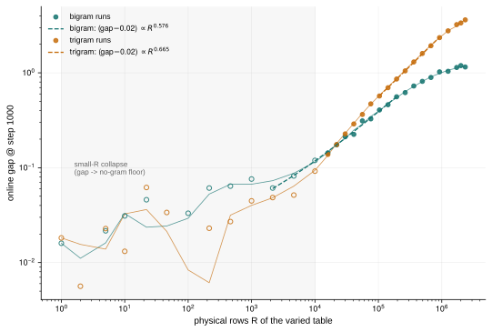
s1v5_128_tbl_{bi,tri}1_R{R}_fixed，另一支路关闭）。R = 被扫表的物理行数。数据：s1_table_size_points.csv；脚本 plot_v5_fig06_table_size.py。epoch 长度：固定 3 个完整 pass，只改变每个 epoch 见过的 unique 数据池长度（0.125×–3.95×L4，L4 = 337 batches ≈ 49.7M token）。gap 随池长全程单调下降（3.55 → 2.47 → 1.96 → 1.52 → 1.27）：每个 epoch 内见到的 distinct 数据越多，同样 3 pass 后的终点 gap 越低。>1×L4 的三个点用真实多 shard 池（train shards 1,2 / 1,2,3 / 1,2,3,4），每个 epoch 恰好完整一遍、无重放；早期只用 shard-1 的旧批在 >1×L4 处发生过 wrap-around（epoch 内偷偷重复消费同一 shard），其「U 形」已作废——见 历史快照 与本页 git 历史。两段 val 组成不同（1×L4 处切换，图 7 红虚线），段内严格可比、段间看趋势。
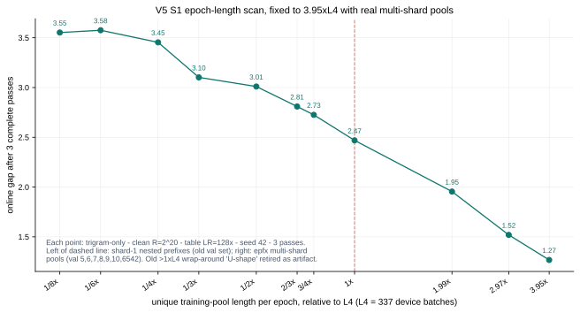
s1v5_128_epfx_*，实际池长 670/1000/1330 batches（= 1.99/2.97/3.95×L4，shard 尾部取整）。trigram 单支路、table ×128、seed 42；红虚线为 val 组成切换处。脚本 plot_v5_epoch_length_valid.py。epoch 编号：固定同一份 1× 数据反复 replay，gap 随完成 pass 数增长。这里的关键不是「第几个 epoch」这个标签，而是：第二轮开始时，当前样本在被预测之前，表里已经有第一轮写入的、与这份训练集特有误差相关的内容。train 会反复遇到同一误差，val 则来自独立样本；共享 backbone 又会在每轮更新中逐渐学会放大这条表信号，所以两者分叉。完整推导见 §8.6。
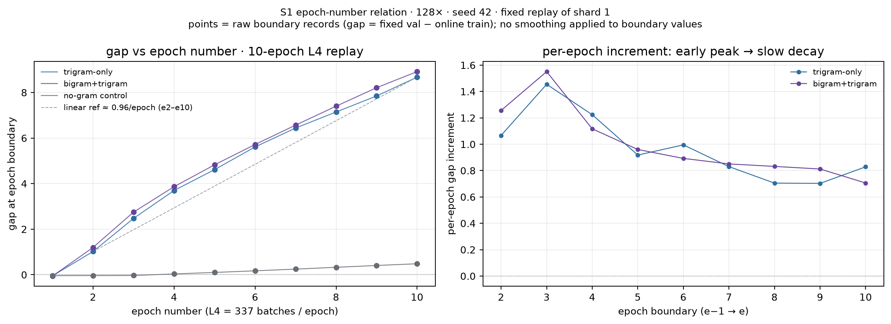
s1v5_128_ep{,_tri}_1xL4_20ep{,_nogram}（§41，进行中）直接测量，完成后本图并入图 8b 的全程版。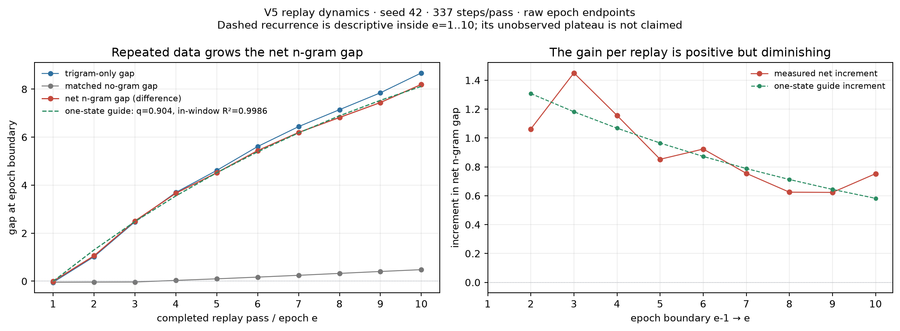
s1v5_128_ep_tri_1xL4_10ep，seed 42，337 步/pass），红线 = 减去 matched nogram 臂后的 net n-gram gap，虚线 = 单状态递推 \(G_e=G_\infty(1-q^{e-1})\) 在 e=1…10 内的形状检验（R²=.9986）；右图 = 逐轮增量（总体下降、有 batch 噪声）。递推外推的「平台 13.58、时间常数 9.88 epoch」只是 10 点窗口的外推，是否真有平台由 §41 的 20-epoch 批判决——若 e>10 后进入平台，递推获支持；若继续近似线性增长，「平台」说法撤回。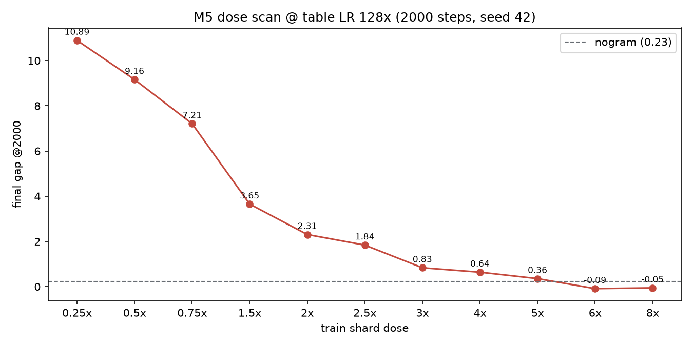
在 epoch 边界做单变量干预，读两条曲线（train / val）与 net gap：
causalv5m3_hash_reseed_e2{,e3}）正在 360-2 运行——若 e3 边界出现第二次幅度相近的击落，说明重对齐可重复学习；若显著更小，则 backbone scar 承担不可恢复成分；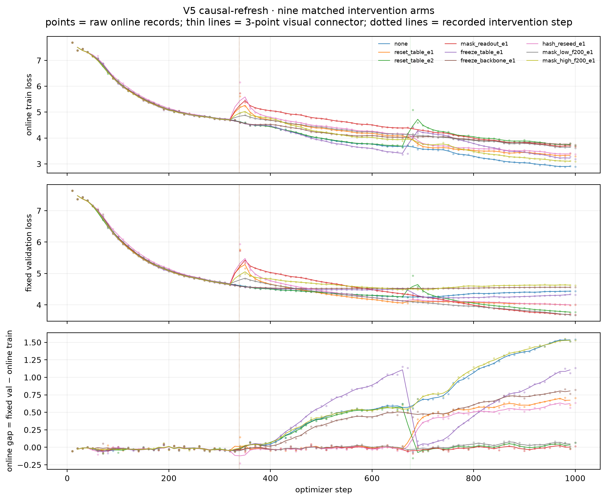
mask_readout / reset_table 仅作破坏性参考，不承担机制结论。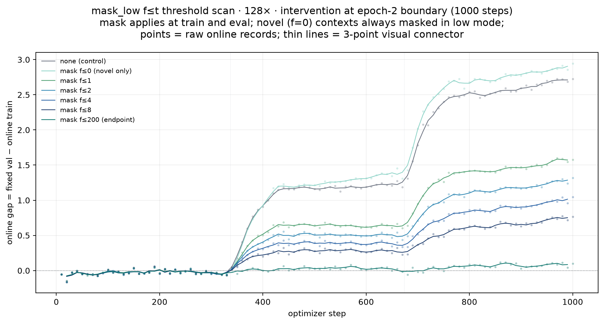
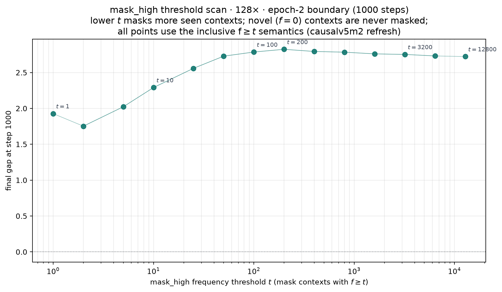
比对规则：本节的 gap 大小比较一律取 step 1000（≈3 pass）的读数；2000 步 run 只用来看曲线形态与稳定性，不参与横向数值比较。
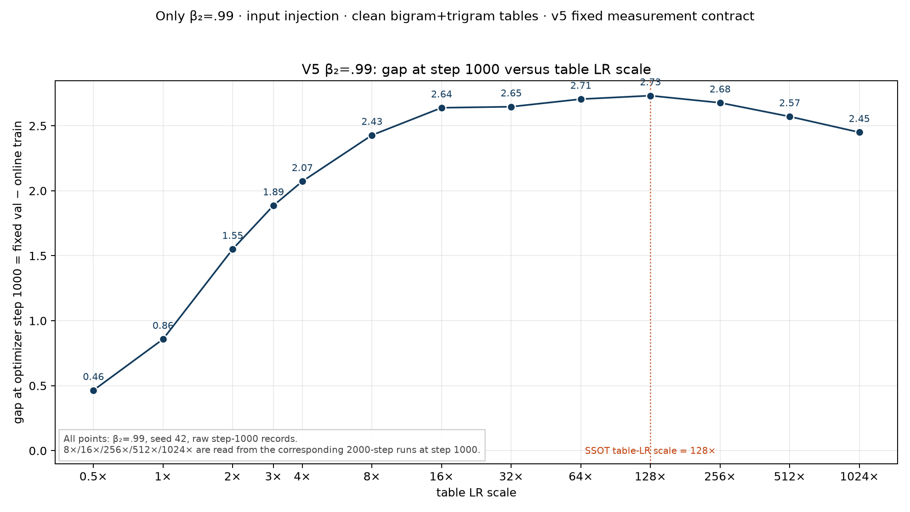
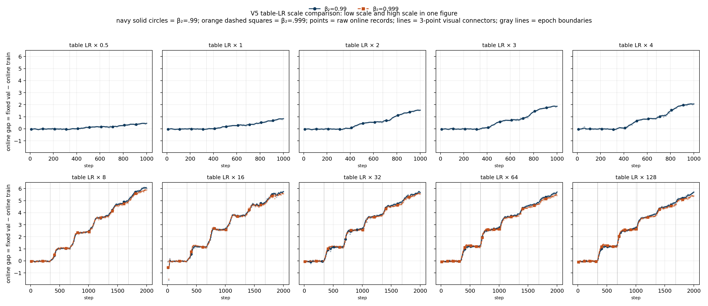
optv5f_* 批。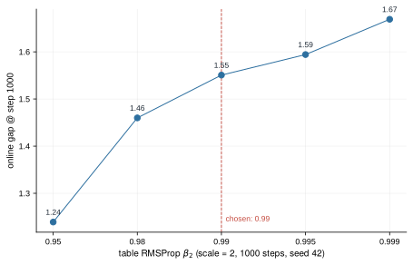
v5_optimizer_points.csv（optv5c_rms_b{095,098,099,0995,0999}_s2p0，seed 42）。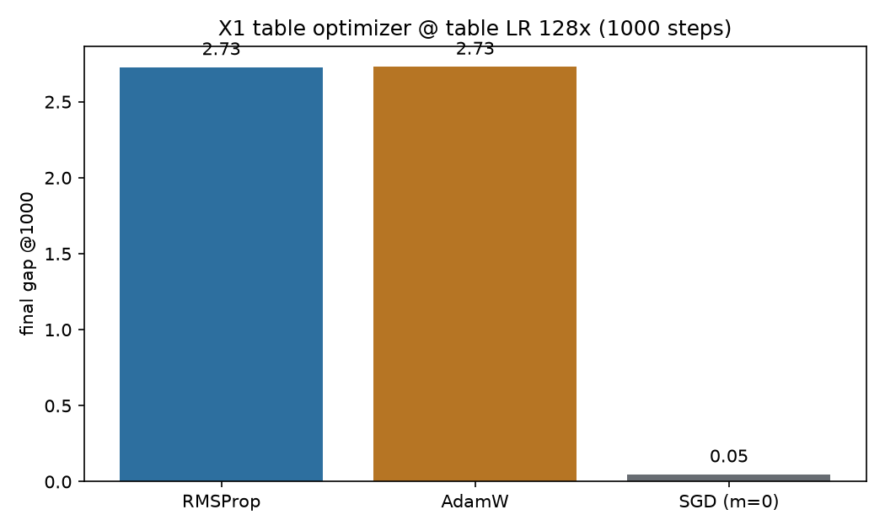
optv5c_{rms,adamw,sgd_m0}_s128x，1000 步，seed 42）。RMSProp (0,.99) 2.73 = AdamW 2.73，SGD（m=0）仅 0.05——逐坐标自适应归一化（近似等步长写入）是表记忆能建立的前提：一次命中只更新一行、但反传梯度按历史幅度逐坐标缩放，裸 SGD 的均匀步长无法把稀疏命中积累成可用内容。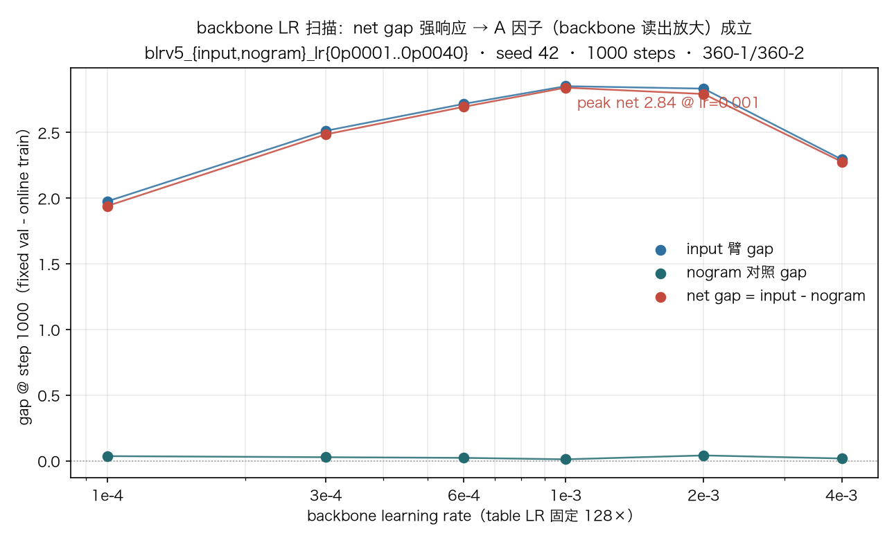
blrv5_{input,nogram}_lr{0p0001..0p0040}，§39）。点 = 各 run 原始 final gap（seed 42，1000 步），细线 = 视觉连接。net gap（input − nogram）：1.940 / 2.486 / 2.696 / 2.841（峰 @1e-3） / 2.793 / 2.277；nogram 全程平坦（0.011–0.041）。主预言「net gap 随 backbone LR 响应后饱和回落」命中 ⇒ A 因子（backbone 读出放大）成立。| backbone lr | 1e-4 | 3e-4 | 6e-4（主线） | 1e-3 | 2e-3 | 4e-3 |
|---|---|---|---|---|---|---|
| input gap | 1.975 | 2.513 | 2.718 | 2.853 | 2.834 | 2.295 |
| nogram gap | 0.036 | 0.027 | 0.022 | 0.011 | 0.041 | 0.018 |
| net gap | 1.940 | 2.486 | 2.696 | 2.841 | 2.793 | 2.277 |
地位：对当前数据最小且可证伪的工作模型。只解释已被数据支持的核心区间：exact-f 的可靠正-gap 段、当前 R 中段、e=1…10 的 fixed replay；不声称解释极小 R、高频尾、mask 后再平衡或更长时间的最终平台。
为排除普通 backbone 自身的小 gap，建模对象是 net n-gram gap：
\[G_e \;:=\; \mathrm{Gap}^{\mathrm{ngram}}_{e} \;-\; \mathrm{Gap}^{\mathrm{nogram}}_{e}\]对训练中出现 \(f\) 次的 context，记其局部 net gap 为 \(g_e(f)\)。核心区间内，全部数据只要求一个语料核与一个训练状态：
\[\text{局部：}\quad g_e(f) \;\approx\; a_e\, M(f) \qquad\qquad \text{全局：}\quad G_e \;\approx\; a_e\, Q, \qquad Q \;:=\; \sum_f \mu_f\, M(f)\]早期版本中的 \(B\)、\(V\)、\(S_{\mathrm{eff}}\)、\(A(t,\text{passes})\) 不再进入核心模型（两分量核只保留为高频尾修正候选）。核心区间的判决标准只有一条：不同 \(f\) 的曲线是否等于同一个 \(M(f)\) 乘一个幅度。
Good–Turing 估计在这里是一个非参数的语料统计量：它从 train 计数估计「未见概率质量」，本身不训练模型、不直接预言 gap；机制假说再把这份未见质量接到表记忆产生的 gap 上。
固定 context \(c\)，记 next token 为 \(y\)，train 中组合 \((c,y)\) 出现 \(n(c,y)\) 次，context 总次数
\[f_c \;=\; \sum_y n(c,y)\]对所有恰好出现 \(f\) 次的 context（频率层 \(L_f=\{c : f_c = f\}\)，\(n(f)=|L_f|\)），数出每个 context 的 next token 中在 train 里恰好出现一次的类型数：
\[N_1(c) \;:=\; \#\{y : n(c,y)=1\}, \qquad N_1(f) \;:=\; \sum_{c \in L_f} N_1(c), \qquad M(f) \;:=\; \frac{N_1(f)}{f\, n(f)} \;=\; \operatorname*{avg}_{c \in L_f}\left[\frac{N_1(c)}{f}\right]\]bigram 支路的 context–continuation 类型是「bigram context + next token」构成的 trigram 类型；trigram 支路对应 4-gram 类型。因此 \(M(f)\) 完全从 tokenized train shard 计数得到，不需要模型、优化器或 GPU。
为什么 \(N_1/f\) 估计 unseen mass。设真实条件分布 \(p_{c,y}=P(y \mid c)\)，从中抽 \(f\) 次作为 train。一个 val continuation 在 train 中从未出现的真实概率质量为
\[P_0(c; f) \;=\; \sum_y p_{c,y}\,(1-p_{c,y})^{f}\]而 train 中 singleton 类型数的期望是
\[\mathbb{E}[\,N_1(c) \mid f\,] \;=\; \sum_y f\, p_{c,y}\,(1-p_{c,y})^{f-1} \qquad\Longrightarrow\qquad \mathbb{E}\!\left[\frac{N_1(c)}{f}\right] \;=\; \sum_y p_{c,y}\,(1-p_{c,y})^{f-1} \;\approx\; P_0(c; f)\]两式只差一个因子 \((1-p)^{-1}\)；missing mass 主要由大量小 \(p\) 的尾部类型贡献时，该因子接近 1——这就是 Good–Turing 的 unseen-mass 估计。健全性检查：\(f{=}1\) 时唯一的 continuation 必为 singleton，故 \(M(1)=1\)；实测计数中 bigram \(M(8)=.510\)、\(M(128)=.269\)，trigram \(M(8)=.535\)、\(M(128)=.296\)。
真实 next-token 分布是 \(p_c\)，有限 train 给出经验分布 \(\hat p_c\)；\(\delta_c = \hat p_c - p_c\) 是这份训练集特有的采样残差。表行快速写入与 \(\delta_c\) 相关的方向：同一 train 样本 replay 时可复用，独立 val 样本不能得到等量收益。对交叉熵在当前 logits 附近作二阶展开，局部 gap 主项形如
\[g_e(c) \;\approx\; a_e\, \big\|\,\hat p_c - p_c \,\big\|^2_{H_c}\]平方残差无法直接观测；\(M(f)\) 是「经验分布遗漏了多少真实支撑」的可观测代理，于是得到核心假说 \(g_e(f)\approx a_e\, M(f)\)。注意这不是「方差必为 \(1/f\)」的推导，因此允许不同 n-gram order 有不同指数。
对单个 context 的 continuation 尾部加一个解析假设：按概率排序后
\[p_{(r)} \;=\; Z^{-1}\, r^{-\alpha}, \qquad \alpha \gt 1\]把 \((1-p)^f\) 在尾部近似为 \(\exp(-fp)\)、以积分代替求和：
\[M(f) \;\approx\; P_0(f) \;\approx\; Z^{-1}\!\int r^{-\alpha}\, \exp\!\left(-f r^{-\alpha}/Z\right) dr \;=\; \frac{\Gamma(1-1/\alpha)}{\alpha}\; Z^{-1/\alpha}\; f^{-(1-1/\alpha)}\]这给「支撑维度」一个具体含义：\(\alpha\) 越大，条件分布尾部越尖，新增 continuation 类型的支撑 \(K(f)\) 增长越慢，missing mass 消耗越快，\(\beta\) 越大。该关系是理想重尾下的局部渐近关系；自然语料有 context 异质性与有限窗口，\(\alpha\)、\(\beta\) 不能当作跨区间常数。
估计完全由已记录的统计量决定：
s1v5_128_frequency_main（seed 42，step 1000，exact-frequency）读取每个 exact \(f\) 的 \(g(f)\) = val mean loss − train-probe mean loss；只保留两侧都有 token 且 \(g \gt 0\) 的点。| branch | 实测 gap 指数 \(\beta_g\) | 计数核指数 \(\beta_M\) | \(\alpha_{\mathrm{eff}}=1/(1-\beta_M)\) | 证据解释 |
|---|---|---|---|---|
| bigram | 0.2548 | 0.2579 | 1.348 | 同一 \(\bar f \le 721\) 窗口、同一 val-token 权重；是对齐的 shape test |
| trigram | 0.3181 | 0.3194 | 1.469 | gap 为登记的 7-bin token-mass fit；M 为 \(f\in[1,100]\)、\(n(f)\) 加权，窗口/权重不同，只算交叉验证 |
bigram 的严格对齐检验中，单幅度 \(\hat C = 8.31\)，加权线性 \(R^2 = .9638\)，乘法 RMSE = 5.74%。只用 \(\bar f \le 100\) 估计 \(C\)（得 8.22），再预测 \(100 \lt \bar f \le 721\)，\(R^2 = .8837\)、乘法 RMSE = 4.77%。这比「两个指数接近」更强，因为 \(M(f)\) 的整条形状没有用 gap 拟合。trigram 的 .318/.319 很醒目，但因有限窗口和权重不齐，正文只把它列为 cross-check，不把小数位相等当作证明。
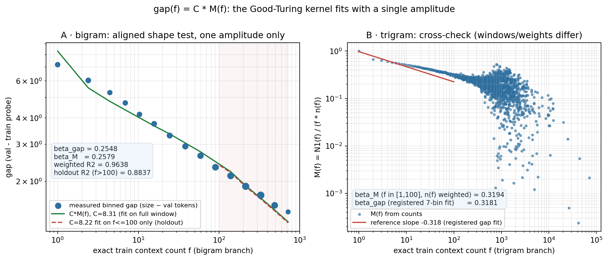
docs/plot_scripts/summarize_good_turing_kernel.py → theory_good_turing_exponent_summary.csv；图源脚本 plot_v5_good_turing_kernel.py。最小动力学只写一个一阶递推：
\[a_{e+1}-a_e \;=\; \eta_b\,(s-\lambda\, a_e) \qquad\Longrightarrow\qquad a_e \;=\; a_\infty\left(1-q^{\,e-1}\right), \qquad G_e \;=\; G_\infty\left(1-q^{\,e-1}\right), \qquad q=1-\eta_b\lambda,\;\; a_\infty = s/\lambda\]\(s\) 是 fixed replay 反复提供的训练残差相关信号；\(\lambda\) 是上述有效恢复力，不是新增到代码里的正则项。早期 \(e\) 较小时 \(G_e\) 近似随 \(e\) 线性；之后每轮增量按 \(q\) 缩小。10-epoch net 曲线的区间内拟合给出 \(q=.904\)、\(R^2=.9986\)（图 8b）。对应的「平台 13.58、时间常数 9.88 epoch」只是短窗口外推，目前没有数据支持把它当作真实平台。
增大 table LR 只加快「写入」，不能凭空创造第二次见到同一样本，也不能把 backbone 的 \(a_e\) 瞬间推到多 epoch 状态。因此 ≥16× 后 table LR 曲线聚拢（图 16b），而 epoch 依赖仍保留。6-pass 因果批给出更直接的判决（全部 seed 42、2022 步、128×，唯一变量为干预）：
causalv5m3_freeze_backbone_e1/e2/e3 的 final gap 依次为 1.585 / 2.505 / 3.389，未冻结对照 causalv5m3_none_2022 为 5.733。允许 backbone 多训练一轮，就锁存更多 gap，方向与 \(a_e\) 单调增长一致。causalv5m3_freeze_table_e2 final gap = 5.386，保留对照的 94%；说明 e2 后继续写表不是后续增长的主要必要条件。在当前实测 R 中段，改变 R 近似只改变所有 \(f\) 的共同幅度，作为独立的有限容量修正：
\[G_e(R) \;\approx\; \rho(R)\; a_e\; Q, \qquad \rho(R_{\mathrm{ref}})=1\]\(\rho(R)\) 在中段近似 \(R^{\gamma}\)（bigram \(\gamma=.576\)、trigram \(\gamma=.665\)），但这只是经验规律。已测稀释面在 \(f\) 上近乎平坦（图 15），而行内流量竞争公式 \(f/(f+T/R)\) 会错误压塌 \(f{=}1\) 端，因此「碰撞如何产生 \(\rho\)」暂不写入核心机制。
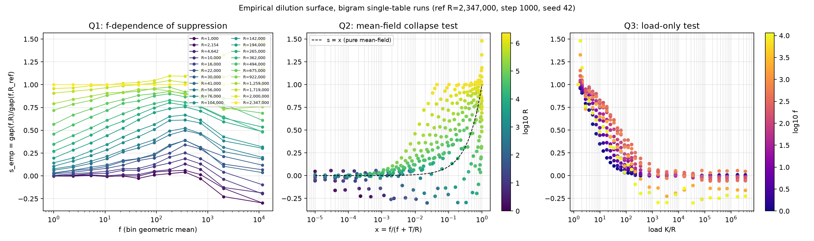
当前判决：核心区间模型 \(g_e(f)=a_e\, M(f)\) 已同时通过频率形状（图 14）、10-epoch 动力学（图 8b）、freeze-backbone 阶梯与 freeze-table 保留四类检验，足以作为主报告的定量解释；仍不能称为对所有 regime 的证明。最关键的下一次 challenge：把同一 shard×3 全局混匀后与分块 replay 比较——若终点相同而 epoch 齿消失，说明状态主要是累计复用；若终点显著改变，就必须在 \(a_e\) 中加入重复间隔/顺序变量。backbone LR 响应曲线的形状（图 18）同样尚未被模型解释。
code/train.py（训练/注入/干预旗标）、code/ngram_freq.py（频率索引）、code/cluster/run_v5_clean.sh（128× 标准 launcher）、code/cluster/run_v5_main_manifest.sh（批量清单）。docs/plot_scripts/（每图一个脚本，数据从 data/runs_fixed/*_fixed/ 的 summary/train_log/exact_freq_loss 直接读取）。docs/plot_scripts/v5_style.py（统一字体/网格/配色：input 蓝、y 红、v 金、nogram 灰、bigram 青、trigram 橙）；每图同时产出 PNG + SVG，正文优先嵌 SVG；可交互视图用 Plotly（图 1），图例点击可隐藏曲线；脚本一图一个、数据只读 data/runs_*/*_fixed/ 与已提交 CSV，不从散文数字造图。docs/experiment-log.md 为登记簿（§38–§40 为最新批）；docs/claims-ledger.md 为断言台账。docs/notes/theory/hypothesis-dilution-amplification.md。docs/report/index.html。{kind=link}
{kind=link}